Receptáculo Roto
Es un antiguo recipiente relacionado con la historia del Caballero. Sus movimientos rápidos y sus ataques infectados hacen que el combate sea un desafío.
Hollow Knight cuenta con numerosos jefes que ponen a prueba las habilidades del jugador durante su aventura por Hallownest. Cada uno posee características, movimientos y estilos de combate propios. Algunos protegen lugares importantes, otros representan antiguos guerreros y también existen enemigos relacionados con los sueños y los desafíos especiales.
Disfruta de la música de uno de los combates más memorables de Hollow Knight mientras recorres esta sección.
Los jefes son enemigos especiales que ofrecen algunos de los enfrentamientos más importantes de Hollow Knight. Para vencerlos, el Caballero debe aprender sus patrones de ataque, esquivar sus movimientos y aprovechar las oportunidades para contraatacar.
Es un antiguo recipiente relacionado con la historia del Caballero. Sus movimientos rápidos y sus ataques infectados hacen que el combate sea un desafío.

Es una criatura agresiva que utiliza ataques físicos y escupe sustancias a distancia para intentar alcanzar al Caballero.

Son dos maestros del aguijón que luchan juntos. Combinan sus técnicas para atacar al Caballero desde diferentes direcciones.

Es una criatura que captura seres vivos y los almacena en frascos. Durante el combate libera enemigos para dificultar la batalla.

Es una criatura que utiliza rayos de energía para atacar. Sus disparos obligan al Caballero a moverse constantemente.

Es un guerrero que utiliza bolas de estiércol y ataques subterráneos para enfrentarse al Caballero.

Es uno de los primeros jefes del juego. Utiliza una enorme maza para golpear el suelo y provocar ondas de choque.

Es una criatura que produce pequeños enemigos para atacar al Caballero durante el enfrentamiento.

Es la combatiente que participa en la Prueba del Insensato. Lucha acompañada de una criatura llamada Bestia.

Es un maestro del aguijón que utiliza movimientos rápidos y técnicas especiales durante el combate.

Es el líder de la Compañía de Grimm. Utiliza ataques relacionados con el fuego y movimientos rápidos para enfrentarse al Caballero.

Es una criatura voladora de gran tamaño que ataca mediante embestidas y rebotes por el escenario.

Es el guardián de la Colmena. Utiliza ataques rápidos y movimientos relacionados con las abejas para defender su territorio.

Es uno de los personajes centrales de la historia. Se encuentra en el Templo del Huevo Negro y está relacionado con la infección.

Es una guerrera que utiliza una aguja unida a un hilo. Sus movimientos rápidos ponen a prueba la habilidad del Caballero.

Son las guardianas de la Aldea Mantis. Luchan coordinadamente y utilizan lanzas para atacar desde distintas posiciones.

Es una criatura que se camufla en el entorno y utiliza embestidas para intentar golpear al Caballero.

Es un depredador que utiliza apariencias engañosas para atraer a sus víctimas. Ataca mediante embestidas y movimientos rápidos.

Es un enemigo volador que aparece junto a otro de su especie. Ambos utilizan proyectiles para atacar al Caballero.

Es un artista y maestro del aguijón que combina sus técnicas de combate con ataques de diferentes colores.

Es una entidad vinculada con la infección que afecta a Hallownest. Su enfrentamiento representa el desenlace verdadero de la aventura.

Es uno de los principales enemigos del Santuario de Almas. Utiliza magia para desplazarse y atacar desde el aire.

Es un enemigo que utiliza hechizos y movimientos rápidos. Puede teletransportarse durante el combate.

Es uno de los líderes de las mantis que abandonaron sus antiguas costumbres. Utiliza ataques fuertes y movimientos rápidos.

Es una criatura gelatinosa que posee protección eléctrica. Para derrotarla es necesario aprovechar las oportunidades durante el combate.

Es el líder de las vengamoscas. Ataca mediante embestidas y convoca pequeñas criaturas voladoras.

Son guerreros que protegen una zona importante del reino. El Caballero debe enfrentarse a ellos de manera consecutiva.

Es un personaje que aparece como oponente en el Coliseo de los Insensatos. Se presenta como un gran guerrero, aunque sus ataques son bastante torpes e impredecibles.
Los guerreros oníricos son antiguos habitantes de Hallownest que permanecen en el mundo de los sueños. El Caballero puede enfrentarlos utilizando el Aguijón Onírico. Al derrotarlos, obtiene esencia, que sirve para avanzar en la historia relacionada con el Vidente y descubrir más sobre el pasado del reino.
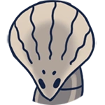
Es un guerrero que afirma poseer una gran sabiduría. Durante el combate lanza agujas mágicas en diferentes direcciones, obligando al Caballero a mantenerse en movimiento.
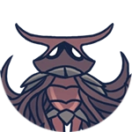
Fue un guerrero que perdió la vida mientras intentaba defender sus creencias. En su enfrentamiento utiliza espadas flotantes que atacan desde diferentes ángulos.
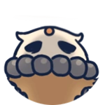
Fue un viajero que intentó ayudar a los habitantes de Hallownest. Durante el combate crea anillos de energía que caen sobre el escenario.
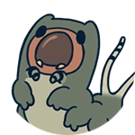
Era una criatura que esperaba aprender a volar. Durante el enfrentamiento rebota constantemente contra el Caballero, por lo que es necesario calcular el momento adecuado para atacar.
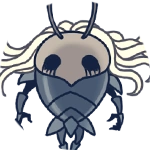
Fue una criatura que vivió durante la propagación de la infección. Su combate utiliza espíritus que atraviesan el escenario para dificultar el enfrentamiento.
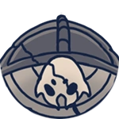
Fue un guerrero que deseaba convertirse en uno de los más poderosos de Hallownest. Durante el combate utiliza una gran guadaña que gira alrededor del campo de batalla.
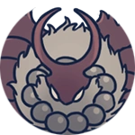
Fue un guerrero que vivió apartado de los demás. Durante el combate utiliza escudos giratorios y proyectiles para protegerse y atacar al Caballero.
Algunos jefes de Hollow Knight cuentan con versiones alternativas que presentan nuevos movimientos, ataques y desafíos. Estas variantes pueden aparecer en el mundo de los sueños o durante los desafíos especiales relacionados con Godhome.
Es una versión mucho más poderosa de la Radiancia. Sus ataques de luz son más numerosos y rápidos, convirtiéndola en uno de los mayores desafíos del juego.
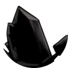
Es una versión más poderosa del Guardián de Cristal. Sus ataques son más rápidos y utiliza rayos de energía para dificultar el enfrentamiento.
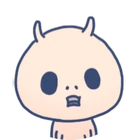
Es la versión onírica del Falso Caballero. Utiliza ataques más rápidos y poderosos, convirtiendo el combate en un desafío mucho mayor.
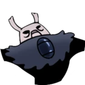
Es una versión soñada de Zote que aparece en los sueños de Bretta. Sus ataques son impredecibles y utiliza diferentes movimientos para intentar derrotar al Caballero.
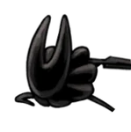
Es el segundo enfrentamiento contra Hornet. En esta batalla utiliza nuevos movimientos y objetos que hacen que el combate sea más exigente.
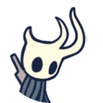
Es la versión onírica de la Vasija Rota. Presenta ataques más intensos y aparecen enemigos relacionados con la infección durante el combate.
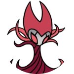
Es la versión más difícil de Grimm. Utiliza ataques de fuego y movimientos extremadamente rápidos que requieren mucha precisión para esquivarlos.
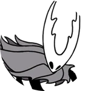
Es la versión completa y perfeccionada del Caballero Hueco. Sus movimientos son rápidos y precisos, y representa un desafío avanzado.
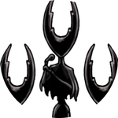
Es una versión más exigente del combate contra las Señoras Mantis. Las tres guerreras atacan coordinadamente y requieren una buena estrategia.
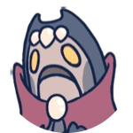
Es la versión onírica del Maestro de Almas. Utiliza ataques mágicos más rápidos y diferentes movimientos para desplazarse por el escenario.
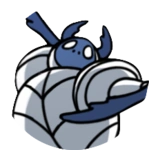
Es una versión onírica del Defensor del Estiércol. Conserva su estilo de combate, pero utiliza ataques más intensos y movimientos exigentes.
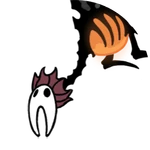
Es una variante de Nosk que posee alas y utiliza ataques aéreos para enfrentarse al Caballero. Sus movimientos hacen que el combate sea diferente al original.